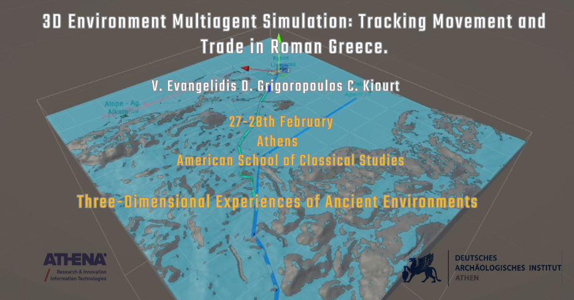
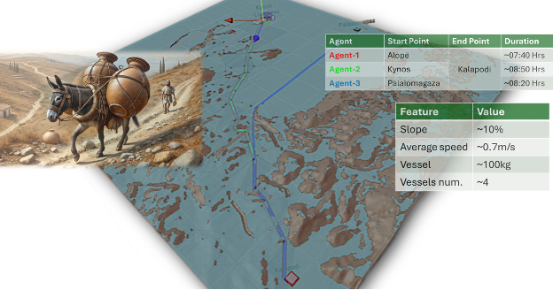
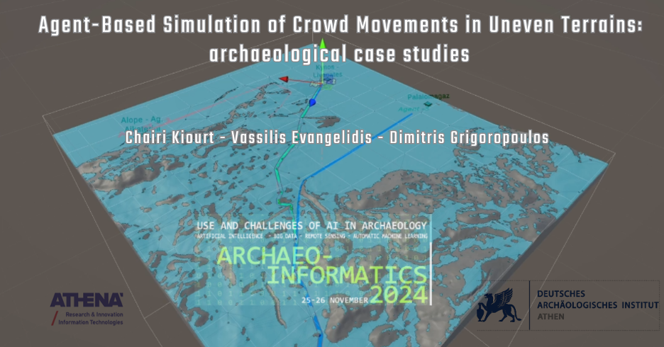

From GIS to ABM: Rethinking Connectivity in Ancient Landscapes
Exploring how we move from static maps to dynamic, agent-based simulations to understand ancient movement, trade, and social interaction.
🎥 Watch: From Static Maps to Living Landscapes
A short introduction to how agent-based simulations transform our understanding of ancient connectivity.
The research initiative explores the evolution of research on networks and connectivity in archaeology, tracing the shift from traditional 2D Geographic Information Systems (GIS) representations to dynamic 3D environments built with modern game engines. By integrating Agent-Based Simulation (ABS), we move beyond the static nature of conventional mapping to model how people, goods, and ideas moved through ancient landscapes.
At the heart of this work lies a commitment to open-access tools and interdisciplinary collaboration, bringing together archaeologists, computer scientists, and machine learning specialists. This fusion of expertise allows us to design intelligent virtual agents capable of simulating realistic patterns of movement, decision-making, and interaction within reconstructed environments.

Example visualization of movement in a reconstructed ancient landscape.Case Studies

Thracian Forts along the Via Egnatia
ABS helps us understand the strategic placement of Thracian forts and their role in controlling movement and visibility across rugged terrain. By simulating agents moving through the landscape, we can explore how fort locations influenced routes, surveillance, and communication.

The Sanctuary of Kalapodi
The sanctuary of Kalapodi in central Greece is a vital inland hub connected to maritime trade networks. Simulations model the flow of goods from coastal harbors to Kalapodi, revealing how terrain, transport modalities, and social behaviors shaped the region’s connectivity and economic life.
Through these examples, we demonstrate how computational simulations can uncover hidden patterns in ancient navigation, trade, and social interaction—patterns influenced by both natural features and socio-cultural dynamics. The integration of serious games within our simulation framework further enhances accessibility and engagement, transforming these research environments into interactive learning tools.
By going “from GIS to ABM,” our effort highlights how new digital methodologies can extend the reach of archaeological interpretation. The approach offers a comprehensive and cost-effective way to visualize movement and trade in the ancient world—bringing past landscapes to life and opening new perspectives on how people experienced and shaped their environments.